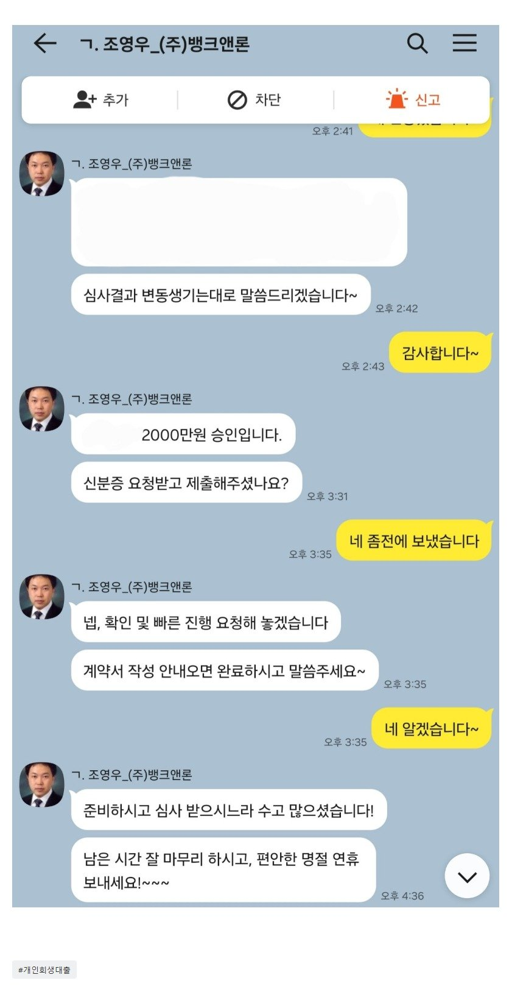

[개인회생자대출] 타중개사들에서 어렵다고 하였는데 뱅크앤론 통해서 2천만 빠른 승인 / 조영우이사님 감사합니다.
[대출조건]
재직기간 5.9년/4대보험 유
22회차/36회
미납 3.9회
월 변제금 약 350만원
기대출 2,200만원
설 연휴 전날에 미납급 해결하려고 고민하다가 연락하게 되었습니다. 다른 업체와의 상담에서도 추가 대출이 어렵다는 답변을 받는 곳이 대부분이어서 기대하지 못했으나, 추가 대출 진행해보겠다는 의견에 기댜하게 되었습니다.
카톡으로 상담하고 빠른 진행으로 2,000만원 추가대출 받을 수 있었고, 미납한 변제금을 해결할 수 있었습니다. 빠른 도움 감사합니다.

https://cafe.naver.com/cityman88/310170